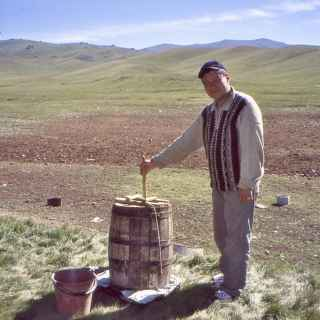
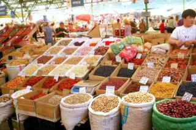
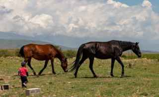

After work Ulan drove me up the valley in his cousin's Niva to meet his uncle, who keeps horses in the foothills for the summer. Big felt tent (yurt), carpets everywhere, about nine relatives, everybody shaking my hand with both hands. Then they brought out the kymyz.
Kymyz is mare's milk, fermented. They milk the mares, put the milk in a leather bag or a barrel, and churn it with a stick for a long time, and it goes sour and a little fizzy and a little bit alcoholic. They drink it EVERY DAY. Out of bowls. It's the national drink and they are very, very proud of it.
What does it taste like? Picture buttermilk that somebody carbonated and then left in a hot truck. With a smoky thing in the back of your throat. I drank one bowl to be polite. They filled it again. Ulan whispered that if I leave some in the bowl they'll stop. I didn't know that for the first three bowls.
The uncle made a little speech with his hands held up, sort of like a blessing, and everybody said "oomin" at the end, and I said "amen" and that went over great. These folks are Christians, which I knew from the news, but it's a different kind than I'm used to. More on that when I get to church (Day 7).

OK. This is the one my wife is going to read out loud at Thanksgiving, so let me get it right.
Friday after work I went to the big bazaar in the old part of town (Bazar-i Kalan, "the big bazaar"). It's huge. Dried fruit, nuts, melons the size of a dog, spices, cheap shoes, car parts, a guy selling one single used carburetor, sheepskins, everything. I loved it.
Now. Before I came out here I read an old travel book about Central Asia from the library, and it said that in this part of the world they make a sausage called kazy out of horse meat, and it's a big delicacy. So I see a stall with sausages hanging up and the lady says "kazy" and I get all excited, because I'm a guy who tries things, and I point at it and say real loud and happy "HORSE?!" and do a little neigh. A neigh. I did a neigh.
Folks. The whole row went quiet. The lady looked at me like I'd asked if it was made of her children. An older man at the next stall said something sharp in Iradi. Two teenage boys started laughing and one of them pointed at me and yelled "HOMER! HOMER!" and then the whole row was laughing and saying "Homer" and I had no idea why.
Ulan explained it to me Saturday morning in the truck, after he was done laughing. Here's the deal:
Ulan says there's even an expression for it now, "Homer's kazy", for when a foreigner screws up but means well. I'm told I am now "the electrician Homer" to about half the crew. Sergei, who speaks no English, has learned the word "Homer" specifically for me.
I went back Saturday afternoon and bought a pound of the beef kazy from the same lady and said sorry in Iradi (Ulan taught me). She gave me a piece of bread for free. Good sausage. Smoky.

I need to tell you about the horses, because they are EVERYWHERE. Not just out in the country. In TOWN. Horses pulling carts down the main road next to the trucks. Horses tied up outside the post office. A man on a horse in the drive-through line... no, there are no drive-throughs. But if there were, there would be a man on a horse in it.
There are two kinds, mainly, as far as I can tell:
Everything is horses here. A kid's name day (like a birthday but for your saint) means he gets a ride or a toy horse. The word for "name" and "horse" is the same word, "at". The flag has a white horse on it. I've seen a horse painted on the side of a bus, a horse on a vodka bottle, a horse on a bank sign. I've seen more horses in six days than in 43 years in Oklahoma, and I'm from OKLAHOMA.
